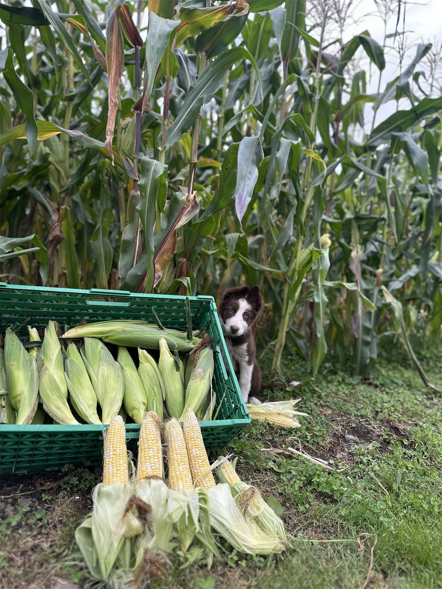

…
Sweetcorn 🌽
Our main crop. Weekends from the end of July to early September, over the school summer holidays. Walk into the rows and pick your cobs straight from the stalk.
We also grow other veg, like potatoes and beans, and mix it up each year.